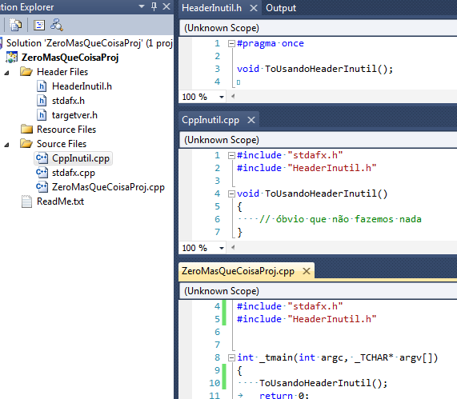
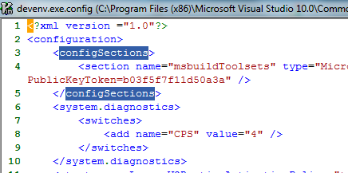
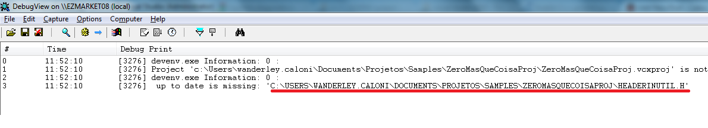

# As Mulheres do Sexto Andar
Caloni, 2012-03-01 <cinema> <movies> [up] [copy]Filme flerta com um evento interessante ocorrido na França dos anos 60 e que curiosamente está ocorrendo nesse momento na esfera da "sofrida" classe média brasileira: o abandono cada vez maior das empregadas domésticas locais e a ascenção de alternativas, como imigrantes de países vizinhos, notadamente em situação econômica mais fragilizada. Pior: flerta, assim como o recente premiado Histórias Cruzadas, com a figura de um empresário que começa a se preocupar com a classe que o serve. Principalmente, é mérito dizer, com a beleza e eficiência da nova empregada, a espanhola María Gonzalez (Natalia Verbeke).
Com um ritmo agradável e piadas que apelam para o absurdo de situações, o filme se beneficia imensamente pelo carisma e simpatia de seus personagens, notadamente um grupo de mulheres que vivem para satisfazer seus empregadores com tarefas domésticas, mas que, assim como todos, sonham com melhores condições de vida em sua terra natal, a Espanha.
Com um final mais longo do que deveria, As Mulheres do 6o. Andar é um filme agradável e ao mesmo tempo esquecível, apesar de conter em sua história elementos inseridos de forma sutil o suficiente para chamar a atenção para si mesmo.
# A Dama de Ferro
Caloni, 2012-03-04 <cinema> <movies> [up] [copy]Ao terminar o filme temos a nítida impressão que ele foi dirigido por alguém que possui ideias completamente repulsivas a respeito da figura de Margaret Thatcher e/ou sobre a ideia de uma mulher governando uma nação. Ou isso ou não temos aí um estudo de personagem (histórico), mas simplesmente um pseudo-documentário que tenta ilustrar tanto a vida pessoal quanto política de uma das mulheres mais significativas do nosso século, mas sem conseguir unificá-la em um ser inteligível, sugerindo de uma forma covarde e inescrupulosa que, bem, se as coisas aconteceram daquela maneira, foi porque estávamos falando de uma mulher que não soube o seu lugar.
De qualquer forma, a fotografia sóbria e fria nos leva para o campo das memórias (delírios?) de uma pessoa agora já no fim de sua vida, sozinha nos pensamentos, mas que tenta não se render à sua decadente posição. Ironicamente é através dela que teremos acesso à sua história. E só pode ser ironia, porque a própria pessoa não consegue estabelecer uma lógica que defina seu raciocínio, seja como esposa ou como ministra. E se temos a esperança que as coisas venham a se encaixar durante a evolução da história, ledo engano. Na verdade, elas pioram, e se tornam episódicas (como a odiável guerra das Malvinas, que nem o pessoal da legendagem teve a coragem de nomeá-las de Ilhas Falkland).
É irônico também que vejamos a ministra Thatcher dando ordens e discursos vazios, pois em nada acrescentam à sua já conhecida história, pois continuam desamarradas de suas convicções. Quer dizer, existem convicções, mas essas são genéricas demais para estabelecerem uma relação entre a figura política e a pessoa por trás de suas palavras.
A direção de Phyllida Lloyd, já conhecida pela quase-catástrofe chamada "Mamma Mia! O Filme", apenas piora isso, inserindo idas e vindas que nada acrescentam e em muito complicam. Ao final temos a sensação de realmente nunca termos conhecido MT como esperaríamos de um filme sobre sua vida. Se em Cidadão Kane isso é uma virtude, pois afinal estamos ouvindo o depoimento de diversas pessoas que conheciam cada um uma faceta do magnata, em A Dama de Ferro é um grave defeito, pois as impressões vêm direto da própria pessoa, e não há prova mais incontestável das contradições da história do que a última cena, onde vemos nossa protagonista realizar um ato que por si só é simbólico para os espectadores atentos que notarem um dos seus primeiros discursos, voltado para o estereótipo da mulher. Se isso não é covardia cinematográfica, difícil saber o que é.
# A Mulher de Preto
Caloni, 2012-03-04 <cinema> <movies> [up] [copy]Vamos falar primeiro sobre a fotografia: ela é escura, até demais, mas consegue criar tomadas internas que estabelecem com primor um clima tanto de luz natural (muito pouca), quanto de fantasia. E mesmo com tão pouca luz, conseguimos enxergar toda a ação ou falta dela. Existem tomadas, por exemplo, onde só dá pra ver a face do protagonista, mas graças à ótima lógica geográfica da casa é possível entender a dinâmica da cena.
A história gira em torno de um advogado que precisa preparar os papéis para a venda de uma casa conhecida na região como amaldiçoada (ou seus antigos moradores). Um tema clichê, portanto. Mesmo assim Daniel Radcliffe, dessa vez livre das amarras de seu Harry Potter, consegue uma interpretação dramática que confere peso ao seu não tão complexo personagem. Porém, mesmo assim conseguimos perceber toda a angústia de Arthur Kipps e sua vida de viúvo após sua mulher ter morrido durante o parto de seu único filho. Mesmo assim sua caracterização é dramática demais para o projeto, que brinca com sustos forçados e exposições além do razoável.
O que pode ser um problema recente na filmografia de terrores hollywoodianos, e que justamente aqui funciona exatamente ao contrário: as melhores sequências de tensão ocorrem justamente onde não existe exposição demasiada, como em uma determinada cena em que o protagonista procura pela figura de um vulto em um quarto vazio e a câmera vai revelando aos poucos o que ironicamente já sabíamos: não há nada no quarto.
Comprometido apenas pela fraca história, o design de arte impressiona, principalmente na casa onde desenrola-se a maior parte da história. Os elementos que lembram a figura infantil, irônica e de forma significativa, são os que dão mais medo, e é tão cômico quanto trágico (um traço curiosamente de Stephen King) a forma como a dona da casa substitui a ausência de crianças em sua vida.
Me fez pensar que as cenas de susto forçado não devem funcionar mesmo sem o aumento do som, pois é um recurso batido usado até mesmo nesse filme que pode-se considerar mais drama que terror. Por outro lado, olhe em volta e perceba a qualidade dos espectadores dos dias de hoje para perceber como cada vez mais o terror deve ficar mais óbvio e, portanto, menos aterrorizante.
# Leur morale... et la nôtre
Caloni, 2012-03-04 <cinema> <movies> [up] [copy]Nessa comédia de humor negro francesa é difícil identificar-se com os protagonistas, um casal de meia-idade que vive sozinho às custas de promoções de supermercados e uma vendinha clandestina em sua própria casa e preocupados com a crescente onda de bandidagem no bairro que residem. Isso porque eles são tão vigaristas quanto os supostos "bandidos" que o casal de meia-idade tanto teme.
Porém, independente disso, é complicado achar a maioria das tiradas engraçadas pelo simples fato que o fenômeno da identificação não ocorre, e, mais prejudicial ainda, pela quase completa falta de timing cômico empregada pelo diretor Florence Quentin, que aparentemente não consegue diferenciar comédia de situação com comédia pastelão, pois mistura cenas de ambas sem qualquer discrepância e ritmo.
Mesmo assim é possível sairmos quase ilesos dessa pequena experiência de comédia de costumes francesa. Talvez o "francesa" da minha descrição tenha algo a ver com minha estranheza.
# Os 7 Suspeitos
Caloni, 2012-03-04 <cinema> <movies> [up] [copy]Já faz algumas décadas que não revia essa comédia ambientada nos anos 50 que mistura elementos de suspense, terror e policial de uma maneira particularmente competente. De certa forma, quando eu tinha cerca de 10 anos já sabia que a graça do filme residia tanto em sua história quanto na dinâmica do grupo, os suspeitos do título.
Algumas piadas, é verdade, estão datadas, e muito dos comportamentos dos personagens podem gerar estranheza. Porém, a dinâmica entre os atores continua lá, e funciona, assim como a direção ágil e cheia de energia de Jonathan Lynn, que consegue, por exemplo, trocar a ambientação da casa para aterrorizante em um determinado momento do longa apenas para as gags que ocorrem quando o grupo resolve se separar em duplas para averiguar os aposentos da casa. Da mesma forma, quando o mordomo começa suas explicações, é nítido que os cortes ficam mais rápidos e fluidos. Para isso temos uma ajuda primordial da trilha sonora, que brinca com o aspecto "fanfarrão" do longa assim como a direção de arte e o figurino.
Hoje em dia poderia constar como uma comédia bobinha dos anos 80 para muito dos jovens cinéfilos, mas o fato é que dirigir um filme naquela época e ainda hoje continuar com a maioria das piadas praticamente intactas é um privilégio de poucos (vide Mulher Nota Mil e outra cópias da época). Nesse sentido, temos uma pequena aula de como dirigir comédias pastelão.
# Marty
Caloni, 2012-03-06 <cinema> <movies> [up] [copy]O que faz Marty ser um filme tão marcante parece ser os mesmos motivos que fizeram com que Laços Humanos, clássico de Elia Kazan, hoje fosse imortalizado. O fato é que, apesar do dramalhão quase mexicano envolvendo a família e os amigos do personagem-título, as atuações e os diálogos, principalmente entre Ernest Borgnine e Betsy Blair, tornam muito difícil não gostar de uma história tão humana e tão sensível.
Ainda assim, é preciso deixar claro que os estereótipos estão aí exatamente para rirmos deles, e não como vemos nos dias de hoje personagens unidimensionais comportando-se como se fossem importantes. Dessa forma, a tia pessimista e agourenta não é mais que uma caricatura, mas que exatamente por ser tão comum em qualquer família, é identificada rapidamente pelo nosso processo de identificação e auto-encaixe.
Da mesma forma ocorre com todos os outros personagens e com as situações, o que de certa forma transforma a experiência em algo próximo de uma fábula, e exatamente como o trabalho de Kazan, que explora as vicissitudes da pobreza e a fortaleza na estrutura familiar, aqui temos a batida história do filho mais velho que começa a envelhecer do lado da mãe e que aparentente não consegue encontrar nenhum partido para juntar os trapos. Sentimos todas as angústias e preocupações de Marty, e entendemos com isso a felicidade do rapaz quando este consegue finalmente encontrar alguém com quem conversar.
É com uma estrutura orgânica e fluida que o diretor Delbert Mann, que parece ter feito dezenas de trabalho para a TV e o Cinema, consegue manipular facilmente nossas emoções e nossa empatia com o rapaz. E é com uma facilidade incrível com que o filme consegue ser transposto quase 50 anos depois e manter praticamente os mesmos efeitos benéficos que o imortalizaram. E muito provavelmente direi o mesmo daqui a 50 anos.
# O Homem Que Mudou o Jogo
Caloni, 2012-03-06 <cinema> <movies> [up] [copy]Brad Pitt é um ator com um controle de personagem invejável. Podemos acompanhar sua trajetória em papéis mais exóticos como o do vampiro Louis (Entrevista com o Vampiro), do maníaco Jeffrey Goines (Os 12 Macacos), do inconsequente Tyler Durden (Clube da Luta) e do cômico Tenente Aldo Raine (Bastardos Inglórios) e compararmos com papéis mais contidos ou dramáticos como o pai de família em A Árvore da Vida, o detetive David Mills em Seven e o gerente de um time de beisebol Billy Beane, papel que desempenha em O Homem que Mudou o Jogo que faz ficarmos em dúvida se existem dois, três ou mais clones do ator escondidos e revelados em momentos pontuais de sua carreira.
A história é baseada em um livro que por sua vez é baseada em fatos reais ocorridos com o gerente geral do time de beisebol Billy Beane do Oakland Athletics. Com o roteiro assinado (depois de vários conflitos com a produtora Sony) pelos ótimos Steven Zaillian (Os Homens que Não Amavam as Mulheres versão 2011) e Aaron Sorkin (A Rede Social), a direção documental de Bennett Miller, que usa com o diretor de fotografia Wally Pfister uma granulação maior justamente para ampliar a temática para a vida real, acerta em manter os atores parados e dialogando a maior parte do tempo, dando ênfase em suas performances e facilitando nossa identificação com a história e os personagens. Porém, acerta mais uma vez em determinados momentos se deixar levar por uma abordagem mais poética, mas que exatamente por refletir a realidade já mostrada se torna tão mais forte e tão mais presente em nossas mentes.
Ainda sobre o tom documental, os sons fazem parte da receita usada por Miller, além de possuírem a dupla função de identificar quando Billy Beane está acompanhando os jogos e quanto não está, como na belíssima introdução de seu personagem em um estádio vazio e escuro, no momento em que ele decide se deixa o rádio ligado ou não, ou mesmo quando em determinado momento ele retorna para o estádio onde ocorre um jogo determinante para sua equipe e pode-se ouvir a diferença de energia pelo som dos torcedores em volta em contrastre com seus momentos de solidão.
E se o filme pode soar parado e monótono, de uma forma geral existe muito mais por trás dos belos diálogos de Zaillian e Sorkin e dos comportamentos de seus personagens do que a princípio possa parecer. Podemos dizer que o filme em si começa e termina como uma fábula do beisebol, mas que internamente, nas entrelinhas, se transforma em algo mais, a ponto de representar uma lição ou filosofia de vida, como um inspirado discurso sobre o que ocorre com as pessoas que ousam mudar qualquer sistema e o que ocorre em seguida com os que evitam mudar.
Mais interessante é notar que na dinâmica da história, mesmo com toda a importância de Billy Beane para o êxito de sua controversa equipe ele não é a estrela absoluta da história. Conta com a ajuda de Peter Brand (Jonah Hill), um economista brilhante que não se curva perante décadas de experiência e intuição esportiva, apesar de timidamente expor seus pontos de vista. É nessa dicotomia entre a especulação de jogadores virtuosa de Billy e a energia interna da convicção inabalável da ideia radical de Peter que conseguimos sentir as estruturas dos estádios seculares e dos treinadores inflexíveis sendo postas em cheque, ainda que lentamente e sem muita fé.
Aliás, fé, razão e intuição são conceitos colocados na mesa a todo momento, e mesmo nós, que assistimos de fora, ficamos com dúvidas durante todo o trajeto. Muitos sairão da sala de exibição convictos que sorte ou talento fazem toda a diferença do mundo, e outros sairão deixando essa convicção na poltrona. De uma forma ou de outra, não dá pra negar que a figura do eterno perdedor não está nas derrotas, mas no pensamento que o define. E uma vez que a pessoa se define perdedora, não há vitórias suficientes que a faça mudar de ideia.
# Conteúdo da Palestra
Caloni, 2012-03-11 <ccppbr> [up] [copy]Uma nuvem mágica...
O evento de C++ na Microsoft (e organizada pelo nosso grupo C/C++ Brasil) aconteceu. Quem esteve lá teve o privilégio de passar algumas horas com programadores e entusiastas de ambas as linguagens e acompanhar o raciocínio dos palestrantes sobre Move Semantics, COM (good times), programação na placa gráfica e a solução para todos os problemas do universo (vulgo ZeroMQ). Fora isso, a palestra que me surpreendeu no dia foi a do Sr. Basílio Miranda, cômica e inspirada, mas sempre nos fornecendo um pouquinho mais de conhecimento acerca do Qt framework, que felizmente ainda não morreu (a Nokia recentemente liberou uma série nova que ainda usa a versão evoluída do Symbian), e graças a isso não precisaremos nos preocupar por enquanto com o destino de nosso ilustríssimo Sr. Basílio.
Fora isso tivemos uma telepalestra com um dos membro do time do Visual Studio. Mas, francamente, estou cada vez menos interessado no VS e mais no Vim. Portanto...
# Filhos do Paraíso
Caloni, 2012-03-11 <cinema> <movies> [up] [copy]Existe algo que vale a pena em Filhos do Paraíso. Se você notar, de repente acompanhamos uma história que não tem nada de original ou espetacular. Mas acompanhamos atentos. Existe algo de mágico em entrar dentro da vida dessa família. De entender seus conflitos, seu modo de viver e o problema que a perda de um par de sapatos representam.
É unindo o trágico com a fábula que o diretor consegue trazer à tona uma história tocante em que o protagonista é um tênis. Sim, um mero tênis. O resto dos personagens, pobres em sua essência (nem estou falando do lado financeiro), seguem na inércia da vida consertar as poucas coisas que conseguem ter algum controle. O resto é um caos.
Porém, quando temos essa chance, ela não é desperdiçada. Todos aqueles dias de tortura, compartilhando um tênis e lutando contra o tempo, agora possuem um significado especial na corrida da escola. É um momento de tensão. Talvez um dos mais tensos que já se viu no Cinema. Aguardamos e acompanhamos o trajeto quase sem respirar. Quase sem aguentar.
O importante a notar é que nem uma vitória seria motivo de orgulho ou felicidade. Não! O primeiro lugar representa tristeza e derrota. É nesses moldes que a mente daquelas pessoas trabalham. E é por isso que, se existe algum vencedor nessa história, é o próprio tênis.
Esse teve garra e aguentou até o fim.
# Drive
Caloni, 2012-03-13 <cinema> <movies> [up] [copy]A filmagem no estilo homenagem aos anos 80 cativa e ao mesmo tempo cria uma atmosfera que aceitamos exatamente pelas inúmeras referências da época, como os créditos estilosos ou as frequentes mas elegantes transições em que o personagem de Ryan Gosling (Tudo pelo Poder) aparece em um plano detalhe e se "esfumaça" para outra cena.
A história gira em torno da figura emblemática ou problemática do "Motorista", ou como consta no IMDB, "Driver". Isso porque em nenhum momento sabemos o nome do protagonista, o que pode tanto querer colocá-lo mais como um ícone ou estereótipo quanto definir sua personalidade como um rapaz reservado e de poucas palavras. Porém, como um tira-teima, a máscara que este usa nas filmagens de cenas de ação onde serve como dublê revela o principal: o motorista é uma figura genérica, sem expressão (como Gosling faz questão de enfatizar em cada cena).
Mesmo inserindo cortes na trilha e falhas de transição como em À Prova de Morte, assim como a obra de Tarantino o filme não é em nada amador, e os enquadramentos perfeitos dentro do carro do motorista, onde viramos praticamente passageiros oniscientes, consequência também da razão de tela mais alargada, ou as belas transições com a cidade vista de cima, além, é claro, da incrível seleção de músicas que se encaixam perfeitamente nas cenas, a direção segura e arriscada (pela breguice) de Nicolas Winding Refn acaba criando uma obra enigmática que nos leva do estranhamento ao deslumbramento em cinco minutos, mas que ao mesmo tempo que emula uma outra época cria uma atmosfera multifacetada e sem data ou lugar definidos.
Porém, definitivamente algo novo e digno de assistir na telona.
# Poder sem Limites
Caloni, 2012-03-14 <cinema> <movies> [up] [copy]Entrando na onda dos filmes gravados como documentários, só que sem os problemas técnicos presentes no gênero, como a qualidade de vídeo, Poder Sem Limites explora a descoberta de três jovens de uma caverna escondida dentro de um buraco e que acaba lhes dando poderes tele cinéticos. Os motivos para isso nunca são revelados, pois o objetivo do longa é mostrar os rapazes explorando esse poder gradativamente, e como cada um deles o usa de forma particular.
Um deles, Andrew (Dane DeHaan), caminha com uma câmera para todo lugar onde vai, e é esse o elemento documental que o filme tenta passar. Tenta, mas de uma maneira forçada, pois o roteiro precisa criar enredos que parecem existir apenas para que uma câmera esteja presente. É o caso do interesse romântico de um deles (Ashley Hinshaw) que também costuma gravar tudo o que acontece em sua volta. Essa câmera extra acidental permite que várias sequências possuam cortes, algo até então não admissível em uma narrativa do gênero.
Porém, ironicamente, os melhores momentos do longa acontecem quando apenas uma câmera está em cena filmando a intimidade dos três agora amigos experimentando sua nova força, pois é como se eles estivessem nos convidando a entrar na brincadeira, o que torna tudo divertido e inconsequente. Nesse sentido, tanto a "câmera na mão" quanto o medo do desconhecido ajudam a tornar a experiência mais realista.
No campo das boas ideias, uma delas é quando Andrew começa a controlar sua câmera com seu novo poder, fazendo-a flutuar em torno de si, uma maneira completamente orgânica na narrativa e que apresenta o personagem de uma maneira mais reflexiva e que constrói, a meu ver, uma personalidade forte cuja imprevisibilidade começa a se tornar interessante gradativamente.
Eu diria um pouco mais: a presença da câmera na vida de Andrew é uma ideia tão poderosa que começou a delinear algo que seria próximo de um vilão da vida real com marca registrada. Pena que suas motivações estejam longe do peso dramático necessário.
É triste, portanto, constatar que essa mistura entre realidade e ficção perde mais nas tentativas de construir narrativas mais fáceis para o espectador comum acompanhar a história. Cria também a sensação que a tendência dos falsos documentários começa a caminhar em direção a um novo patamar: os falsos documentários que também são falsos.
# A Troca
Caloni, 2012-03-18 <cinema> <movies> [up] [copy]Impressionante como é possível admirar uma direção competente e experiente mesmo sem conhecê-la. Foi assim com A Troca, um drama de época envolvendo a história de vida de uma mulher que tem seu filho desaparecido e sua luta contra o sistema corrupto da polícia de Los Angeles da década de 20 e 30. Foi só nos créditos que descobri se tratar mais uma vez do trabalho sempre constante de Clint Eastwood (Menina de Ouro, Sobre Meninos e Lobos), que, diferente do seu passado de ator com uma cara só, vem se preocupando com temáticas mais humanistas sem deixar de lado uma discussão mais profunda sobre a sociedade onde isso ocorre. Nesse sentido é possível comparar este belo trabalho com Menina de Ouro. Em todos os outros sentidos, porém, é uma história completamente diferente.
O fraco roteiro de J. Michael Straczynski (Anjos da Noite: O Despertar) não empolga muito, talvez por estar sempre envolvido em alguma reviravolta que já sabemos de antemão no que vai dar, e quase sempre colocando diálogos bem pouco inspirados, para não dizer monótonos, na boca de seus personagens, que são baseados em uma história real. Nem é possível falar muito de atuação, pois ainda que Angelina Jolie aqui se esforce, continua sendo Jolie, "status quo" que nunca abandonou, exceto em Garota Interrompida. Se há alguém que impressiona pela eficácia, ainda que em um papel secundário, é Jason Butler Harner como o serial killer Gordon Northcott, que tem momentos em que é digno de dó, e outros que simplesmente nos atormenta pela sua instabilidade emocional.
Ainda que o tema inicial da história seja o desaparecimento do filho de Christine Collins (Jolie), o "Changeling" do título original parece remeter muito mais às mudanças que daí ocasionaram em como a polícia local tratava os direitos de seus cidadãos, uma época em que existia um verdadeiro "[Bope]" nas ruas de Los Angeles, fazendo justiça com as próprias mãos para esconder em seu mecanismo interno uma rede de corrupção e desvios de moral. É com esse pano de fundo que Eastwood parece nunca se esquecer, e são os personagens secundários que de fato conseguem não tornar a experiência apenas subjetiva. Nesse sentido, todo o drama vivido pela Sra. Collins não foi em vão, pois serve de ponte para entendermos como a impunidade muitas vezes consegue prejudicar até o mais inocente dos cidadãos.
# Shame
Caloni, 2012-03-18 <cinema> <movies> [up] [copy]A princípio Shame não parece um filme que fuja do lugar-comum. Com um ritmo mais lento e, portanto, reflexivo, ele nos leva a conhecer aos poucos a vida de Brandon Sullivan (Michael Fassbender), um rapaz comum que mora sozinho, tem um belo emprego, mas que é um inveterado por sexo, solitário ou com prostitutas. Paradoxalmente, Brandon não consegue ter relacionamentos duradouros, e nem a presença de sua irmã Sissy (Carey Mulligan) faz com que ele consiga se conectar com o mundo. Alheio a tudo que não seja relativo ao ato sexual, Brandon sabe que possui um tipo de doença, e essa consciência é que torna tudo muito mais humano em sua história.
Não há concessões em Shame. O filme não é explícito, mas suas alusões são suficientes para criar um clima opressivo e angustiante. Nem o ritmo é uma concessão. Lento muitas vezes à exaustão, nos abre os olhos para o que está por trás de tudo aquilo, na maioria das vezes sem nenhum diálogo. Basta enxergarmos o contexto inebriante da situação dos dois irmãos, ou as expressões de angústia presa na face de Fassbender para que entendamos o martírio que passaram esses personagens, da infância para a adolescência e por fim a uma maturidade inalcançada no universo dos sentimentos.
Tampouco é um filme com um arco dramático satisfatório. Porém, que me perdoem os amantes de finais fáceis ou dos que nos deixam colocar a cabeça no travesseiro e dormir em paz, mas se há algo que valorizo no cinema é o seu poder de reflexão. E, nesse sentido, Shame ficará por algum tempo perturbando minhas fantasias sexuais.
# 2 Filhos de Francisco: A História De Zezé di Camargo & Luciano
Caloni, 2012-03-25 <cinema> <movies> <miniviews> <fragments> [up] [copy]A direção empenhada de Breno Silveira cria um Francisco, o real protagonista do filme, convincente, mesmo a história se tratando de uma pequena fábula. Cada pequena conquista é celebrada por todo o contexto, e não apenas como meras historietas isoladas.
# Paprika
Caloni, 2012-03-25 <cinema> <movies> [up] [copy]Paprika funciona muito bem como cinema experimental, onde boas ideias costumam nascer. A ideia central da história, a manipulação e compartilhamento dos sonhos de uma pessoa, deu origem, por exemplo à A Origem! No entanto, diferente da experiência racional de Christopher Nolan, Paprika não se preocupa em desenvolver muito seus personagens ou mesmo sua história, em que não temos muita certeza das ameaças por trás da invenção dos sonhos ter caído em mãos erradas. De certa forma, o filme é tão poético ou tão caótico quanto os próprios sonhos que estamos acostumados a ter. Sem algo que prenda as atenções, o subconsciente é importante para apreciarmos um filme de sensações e, principalmente, de conexões não sempre lógicas ou mastigadas.
# Cliente Morto Não Paga
Caloni, 2012-03-27 <cinema> <movies> [up] [copy]O filme começa com um horizonte de papelão e com uma chuva mais falsa que o próprio horizonte: está pronta referência dos filmes noir, gênero clássico que mistura um clima opressivo, uma fotografia escura e um detetive desiludido apaixonado por uma estereotipada femme-fatale. Nesse caso, o detetive é Steve Martin, que quando é enfocado pela primeira vez dispensa explicações sobre o teor cômico do filme: inebriado pelo tom solene dos filmes que homenageia, o detetive Rigby Reardon parece não perceber que é uma caricatura de ícones da história do cinema, que reencarnavam o mesmo personagem, mas sem sua desenvoltura cômica.
Na verdade, o aspecto de um filme noir é exatamente o oposto, e é isso que causa a maior parte da estranheza durante o longa. Ao misturar cenas de diversos filmes do gênero e seus atores-ícones, a história consegue se inserir de penetra nessa atmosfera mesmo em momentos hilários, como quando Martin pede repetidamente ao amigo "Humphrey Bogart" para usar gravata.
Engraçado mais pela situação do que pelas tiradas cômicas, ainda que elas existam moderadamente, Cliente Morto é uma mistura de dois gêneros que funciona parcialmente em ambos. Talvez o detetive de Martin não tenha envelhecido bem, como tantos outros noir fora de seu tempo.
# Header Inútil
Caloni, 2012-03-27 <computer> [up] [copy]O Visual Studio é uma ótima ferramenta para depurar rapidamente programas sendo desenvolvidos e <del>para editar vários arquivos ao mesmo tempo</del> para o resto usamos Vim. No entanto, a versão 2010 do ambiente (ainda não testei a 2011 beta) possui um pequeno deslize com sua árvore de dependências que não chega a prejudica o desenvolvedor, mas o deixa com um bug atrás da orelha.
Vamos supor que você crie seu super-projeto ZeroMQ e no meio dele acabe evoluindo uma nova forma de vida inútil e descartável, que aqui iremos chamar de HeaderInutil e seu fiel companheiro CppInutil:
OK. Ele não está fazendo nada, mas e daí? Compilo meu projeto normalmente e depuro ele como se nada estivesse acontecendo.
------ Rebuild All started: Project: ZeroMasQueCoisaProj, Configuration: Debug Win32 ------ Build started 27/03/2012 11:40:32. _PrepareForClean: Deleting file "Debug\ZeroMasQueCoisaProj.lastbuildstate". InitializeBuildStatus: Creating "Debug\ZeroMasQueCoisaProj.unsuccessfulbuild" because "AlwaysCreate" was specified. ClCompile: stdafx.cpp ZeroMasQueCoisaProj.cpp CppInutil.cpp Generating Code... Manifest: Deleting file "Debug\ZeroMasQueCoisaProj.exe.embed.manifest". LinkEmbedManifest: ZeroMasQueCoisaProj.vcxproj -> c:\...\Debug\ZeroMasQueCoisaProj.exe FinalizeBuildStatus: Deleting file "Debug\ZeroMasQueCoisaProj.unsuccessfulbuild". Touching "Debug\ZeroMasQueCoisaProj.lastbuildstate". Build succeeded. Time Elapsed 00:00:00.73 ========== Rebuild All: 1 succeeded, 0 failed, 0 skipped ========== 'ZeroMasQueCoisaProj.exe': Loaded 'C:\...\Debug\ZeroMasQueCoisaProj.exe', Symbols loaded. 'ZeroMasQueCoisaProj.exe': Loaded 'C:\Windows\SysWOW64\ntdll.dll', Cannot find or open the PDB file 'ZeroMasQueCoisaProj.exe': Loaded 'C:\Windows\SysWOW64\kernel32.dll', Cannot find or open the PDB file 'ZeroMasQueCoisaProj.exe': Loaded 'C:\Windows\SysWOW64\KernelBase.dll', Cannot find or open the PDB file 'ZeroMasQueCoisaProj.exe': Loaded 'C:\Windows\SysWOW64\msvcr100d.dll', Symbols loaded. The program '[5212] ZeroMasQueCoisaProj.exe: Native' has exited with code 0 (0x0).
Show.
Mas o que acontece se eu precisar no momento do refactory (**que deve, sim, existir**) eu decidir remover meus arquivos inúteis?
Continuo compilando normalmente o projeto, mas na hora de depurar...
Mas o que ocorre? Eu acabei de compilar o projeto! E se eu compilar novamente e pressionar F5, ele continua apresentando o mesmo problema!
_OK, não estou admitindo aqui o famigerado Rebuild All. Se você mantém projetos com mais de 200 arquivos, acho que deve **repensar seus conceitos** ao usar Rebuild All para tudo nessa vida._
Acontece que existe uma árvore de dependências que o Visual Studio mantém para saber se seu projeto foi atualizado com tudo que tem mais de novo no que diz respeito ao **File System**, mas às vezes se esquece de checar o FS com o que está na solution. Por conta disso, o HeaderInutil e o CppInutil continuam dentro da árvore de dependência como zumbis.
O que pode ser feito nesse caso (além do que os personagens de The Walking Dead costumam fazer) é configurar o arquivo devenv.exe.config (presente em **%programfiles(x86)%\Microsoft Visual Studio 10.0\Common7\IDE**) e adicionar as seguintes linhas após a seção **configSections. (**Esses passos estão descritos no blogue da equipe do VC.)
<system.diagnostics> <switches> <add name="CPS" value="4" /> </switches> </system.diagnostics>
Depois de modificar o arquivo, reinicie o Visual Studio e tente novamente apertar F5 no mesmo projeto, **mas com o DebugView aberto**.
Como um amigo meu diria: "**AHÁ!!**". Descobrimos o culpado.
A solução? Nesse caso não tem jeito: dar um clean no projeto e build novamente para que o VS reconstrua a árvore de dependências. Porém, **agora sabemos por que precisamos do Rebuild All**. Não é RebuildAllMania.
# Raul: O Início, o Fim e o Meio
Caloni, 2012-03-28 <cinema> <movies> [up] [copy]"Raul" é um tipo de experiência cinematográfica que faz pensar em muitas coisas, mas que ao mesmo tempo consegue extrair a essência do Maluco Beleza em todos os sentidos de sua vida e de sua filosofia. Dessa forma, temos um protagonista forte, ainda que ausente.
O filme te transporta facilmente para o universo de Raulzito pelo simples fato dos depoimentos de pessoas muito próximas do ídolos praticamente se abrirem com respeito a sentimentos, sensações e impressões que nos dão uma noção muito boa do que era conviver com o cantor. Os cortes rápidos, nunca permitindo que um entrevistado monopolize o tempo, e sim oscilando entre imagens de arquivo que ilustram a narrativa naquele momento, ampliam a experiência áudio-visual. Sim, pois a música não está apenas presente por se tratar da biografia de um cantor, mas é parte conjunta e essencial da narrativa.
A própria razão de tela parece representar esse movimento de vai-e-vem, pois quando vemos a tela larga sabemos que algum ente querido de Raul está tentando ampliar nossa visão de quem ele era, enquanto as tomadas mais quadradas, mais estreitas, nos levam diretamente para ele, como que em uma janela mágica a nos transportar entre passado e presente. As palavras do entrevistado ecoam e vão-se para o passado, e a visão de Raul cantando, falando ou simplesmente em uma sequência super-inspirada de fotos que combina perfeitamente com o momento, faz o desfecho de um episódio. Que alimenta o próximo.
Dessa forma torna-se agradável acompanhar a trajetória do cantor, se envolver e querer mais, pois a cada experiência vivida por alguém que o conhecia parece ampliar e enriquecer nossa própria noção que tínhamos sobre ele. Não há nada de extraordinário nisso, mas na maneira com que a história é contada e como o trabalho excepcional de Pablo Ribeiro consegue fazer fluir momentos tão distintos da vida do cantor. E os recortes de shows! Note, por exemplo, como em alguns momentos Ribeiro intercala na mesma música tomadas de uma "turnê" feita pelas grandes cidades, tudo isso sem perder o tom.
E não é só na edição que podemos notar a fluidez e maestria nas composições, mas também em sua fotografia coesa que, sutil, não agride nossos olhos com idas e vindas de imagens sem qualidade (aqui e ali, mas perdoável), pois as próprias tomadas presentes não são tão estilizadas para causar essa estranheza, mas estão de acordo com o resto do material. Nesse sentido, faz sentido, por exemplo, não exagerar na "maquiagem" nos entrevistados.
Todos esses são esforços admiráveis para ilustrar melhor o que era esse maluco beleza para eles, em um convite realmente sincero para experimentarmos o que era Raul em todos os sentidos e em todas as fases de sua vida. Dessa forma, temos montagens absolutamente surreais de sua banda no estado atual tocando atrás de um pano que projeta suas versões de outrora, ou uma referência quase que espontânea ao filme de Elvis Presley, de quem Raul era fã assumido e escancarado pelo seu trabalho.
Ainda com os entrevistados, a montagem sugere uma espécie de diálogo velado entre eles, expondo por exemplo rixas entre seus parceiros de composição Paulo Coelho e Cláudio Roberto. No entanto, há a tentativa de tornar tudo isso um experimento mais visual que acordado entre as partes, gerando pequenas polêmicas como em um momento em que um entrevistado afirma Raul ser muito mais revolucionário que o próprio Caetano, líder do movimento Tropicália (que, diga-se de passagem, também é um dos entrevistados).
A conversa ainda levanta a questão da censura de maneira quase poética ao enfocar uma gravação sem som de rapazes sendo proibidos de se reunirem na praia para ouvir boa música na época da ditadura e cria um contraponto com a declaração de Paulo Coelho de ter apresentado à Raul todas as drogas possíveis, uma frase que sem sombra de dúvida seria motivo de perseguição política naquela época, mas que hoje pode ser dito, gravado e publicado.
Nesse sentido, o próprio filme é uma homenagem e uma resposta para esse contestador que foi Raulzito, como que houvesse um contato extraterreno a dizer para ele:"Está vendo? Hoje podemos fazer o que quisermos, pois há de tudo ser da lei".
Acredito, sinceramente, que Raul esteja escutando.